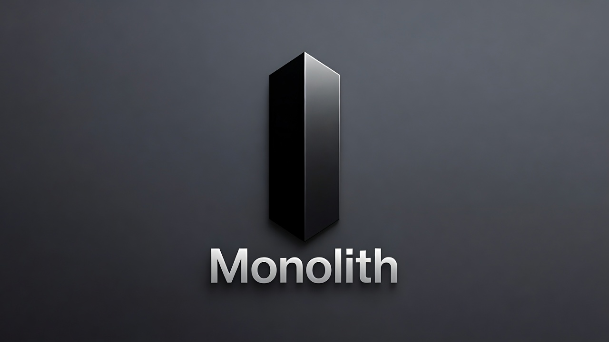

Space Capital Stack Monolith
For the last 8 years, Meagan has pioneered space venture capital — high-risk, early-stage investing in companies changing the universe. Working within a new industry previously regarded as uninvestable, she has produced best-in-class results with two of the nation's top-performing venture funds. As these companies move into production and early revenue, they need a full capital stack: debt, risk management, and real asset development. Meagan is now solving this by creating a fund of funds that can invest in and direct private credit, insurance, real estate development, workforce development, and quantitative data solutions.
Karman Line / SpacePort Fund
Spaceports are necessarily in remote areas. As launch cadence increases and spaceports are built worldwide, real estate in these remote areas can become extremely valuable if developed to meet the needs of the growing space industry. Karman Line lives at the intersection of real estate and space. We are currently raising Fund I, a $50M workforce housing fund focused on Cape Canaveral and several other US spaceports, with a $30M anchor committed.
Space Fund I & II
Space Fund 1 & 2, managed by Meagan and Leo, has overperformed across every fund metric since inception.
SpaceFund is the world's first venture capital firm focused exclusively on space technology and the new space economy. Meagan Crawford co-founded and serves as Managing Partner, deploying capital into early-stage space companies across launch, satellites, space infrastructure, and downstream applications.